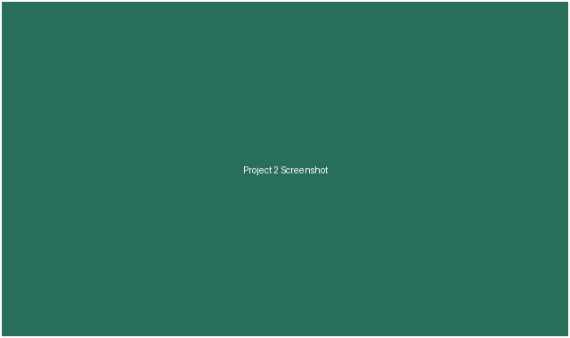

Project One: Campus Event Finder

A full-stack app that actually pulls campus events into one place so people stop missing them.

I'm a computer science student who likes building things that actually
work end to end, not just look nice in a screenshot.
Looking for internships for summer 2027.
A full-stack app that actually pulls campus events into one place so people stop missing them.

A small habit tracker I made because every other one felt overbuilt for what I actually needed.

A recipe manager so my family would stop texting each other blurry photos of index cards.
I've shipped 3 projects for classes so far, with more on the way.
I've been writing code for about 2 years now.
Python is still my favorite language by a good margin.